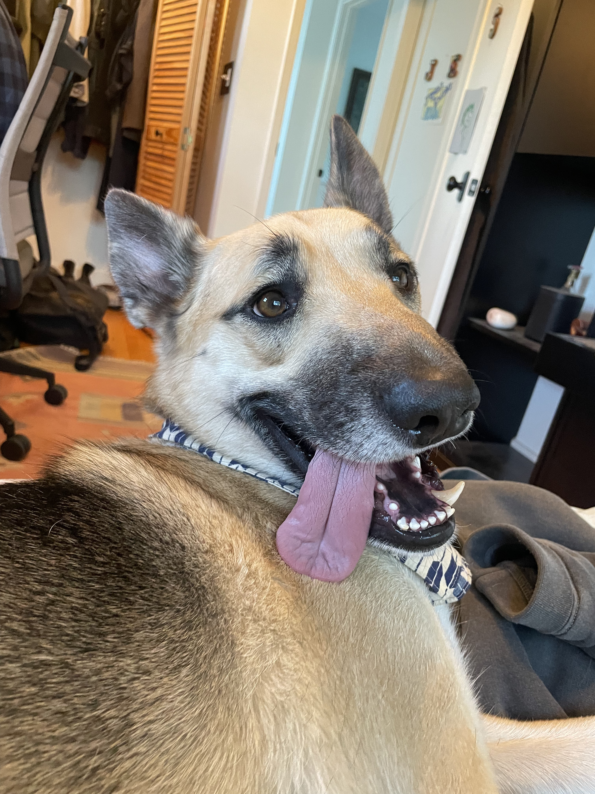
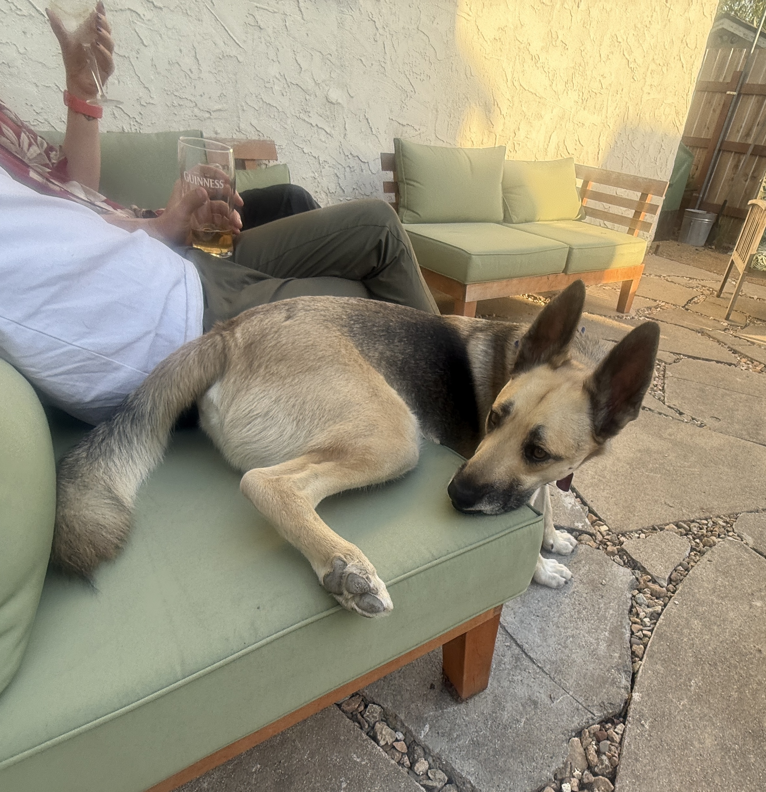
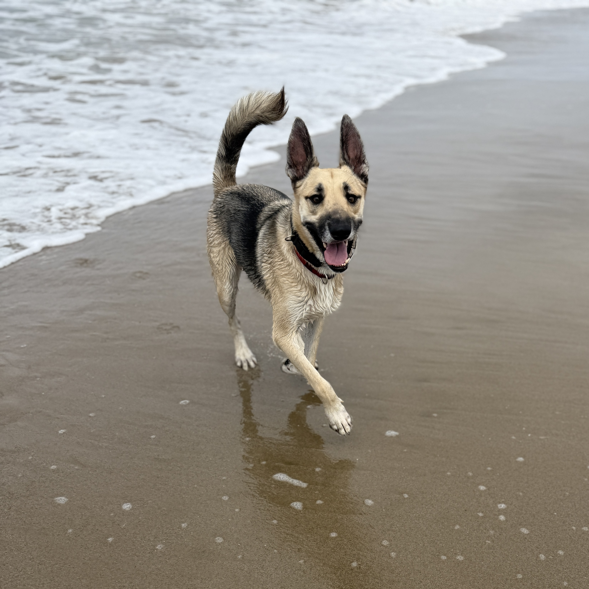

Feeding
Goose eats twice a day. He will absolutely pretend he hasn't been fed. He has.
Throw two generic human allergy pills into his kibble in the morning. He might eat around them — if you find a pill on the floor later, that's why.
You can wrap them in a little peanut butter to make it easier, but you totally don't have to. Up to you.

Walks
Always use the bite collar for walks. To release it, just unclip the black plastic clip — no need to pull apart any part of the leash. Simple.
Goose is generally really well-behaved on leash. He's friendly with other dogs but will go a little crazy before meeting them. He's not aggressive — he just wants to sniff and then he's over it.

Sleeping & Hanging Out
Goose's strong preference is to sleep in bed, on top of you, ideally occupying more than his fair share of the mattress. That said, he doesn't always insist — you're allowed to have boundaries.
The Food Situation
Goose will get up on the counter. He has done it before and he will do it again. He is an astonishing food thief with no shame and no limits. He also may try to open the trash barrel — he used to be able to do it, and it's unclear whether he's still capable. Assume yes.
Confirmed incidents from his criminal record:
- An entire bag of dry orzo. Uncooked. He ate it dry.
- Half a pound of gummy bears. Gone.
- Multiple packets of instant coffee. He was fine. Somehow.
If it smells like food and it's reachable, it's gone. Counter height is not a deterrent. Treat the counter as ground level for Goose's purposes.
